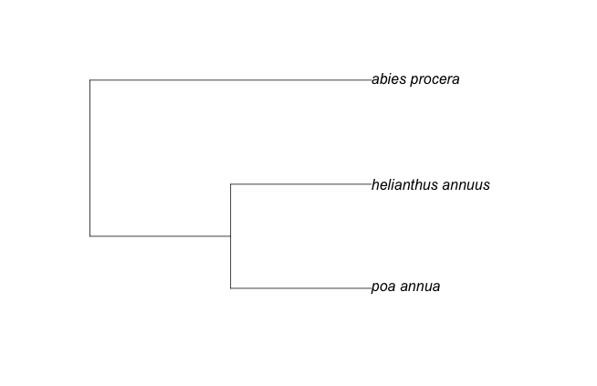

About the package
We are developing taxize as a package to allow users to search over many websites for species names (scientific and common) and download up and downstream taxonomic hierarchical information - and many other things.The functions in the package that hit a specific API have a prefix and suffix separated by an underscore. They follow the format of service_whatitdoes. For example, gnr_resolve uses the Global Names Resolver API to resolve species names. General functions in the package that don't hit a specific API don't have two words separated by an underscore, e.g., classification.
You need API keys for Encyclopedia of Life (EOL), the Universal Biological Indexer and Organizer (uBio), Tropicos, and Plantminer.
Installing taxize
A stable version is now available on CRAN.# Stable version from CRAN
install.packages('taxize')
library(taxize)
# or install the development version from our GitHub repo.
install.packages('devtools')
library(devtools)
install_github('taxize_', 'ropensci')
library(taxize)Phylomatic - get a phylogeny of plant species
> # input the taxonomic names
> taxa <- c("Poa annua", "Abies procera", "Helianthus annuus")
>
> # fetch the tree - the formatting of names and higher taxonmy is done within the function
> tree <- phylomatic_tree(taxa=taxa, get = 'POST', informat='newick', method = "phylomatic",
+ storedtree = "R20120829", taxaformat = "slashpath", outformat = "newick", clean = "true")
Retrieving data for species ' Poa annua '
Retrieving data for species ' Abies procera '
Retrieving data for species ' Helianthus annuus '
http://www.itis.gov/ITISWebService/services/ITISService/getFullHierarchyFromTSN?tsn=41107
http://www.itis.gov/ITISWebService/services/ITISService/getFullHierarchyFromTSN?tsn=181835
http://www.itis.gov/ITISWebService/services/ITISService/getFullHierarchyFromTSN?tsn=36616
>
> # plot the tree
> plot(tree)
Integrated Taxonomic Information Service (ITIS)
Search by term and search type (Note: TSN stands for Taxonomic Serial Number)
> itis(203539, c("getsynonymnamesfromtsn","getacceptednamesfromtsn"))
http://www.itis.gov/ITISWebService/services/ITISService/getSynonymNamesFromTSN?tsn=203539
$getsynonymnamesfromtsn
$getsynonymnamesfromtsn$`203539`
name tsn
1 nomatch 203539
$getacceptednamesfromtsn
$getacceptednamesfromtsn$`203539`
$getacceptednamesfromtsn$`203539`$submittedTsn
[1] "203539"
$getacceptednamesfromtsn$`203539`$acceptedName
[1] "Ursus americanus luteolus"
$getacceptednamesfromtsn$`203539`$acceptedTsn
[1] "202388"Show higher taxonomy for a given TSN
> classification(685566, ID = "tsn")
http://www.itis.gov/ITISWebService/services/ITISService/getFullHierarchyFromTSN?tsn=685566
[[1]]
parentName parentTsn rankName taxonName tsn
1 Kingdom Animalia 202423
2 Animalia 202423 Phylum Chordata 158852
3 Chordata 158852 Subphylum Vertebrata 331030
4 Vertebrata 331030 Class Amphibia 173420
5 Amphibia 173420 Order Caudata 173584
6 Caudata 173584 Family Plethodontidae 173631
7 Plethodontidae 173631 Subfamily Plethodontinae 550197
8 Plethodontinae 550197 Genus Plethodon 173648
9 Plethodon 173648 Species Plethodon asupak 685566Get a TSN from a species name
> tsn <- get_tsn(searchterm = "Quercus_douglasii", searchtype = "sciname")
Retrieving data for species ' Quercus_douglasii '
# use classification with get_tsn together:
> classification(tsn)
http://www.itis.gov/ITISWebService/services/ITISService/getFullHierarchyFromTSN?tsn=19322
$`1`
parentName parentTsn rankName taxonName tsn
1 Kingdom Plantae 202422
2 Plantae 202422 Subkingdom Viridaeplantae 846492
3 Viridaeplantae 846492 Infrakingdom Streptophyta 846494
4 Streptophyta 846494 Division Tracheophyta 846496
5 Tracheophyta 846496 Subdivision Spermatophytina 846504
6 Spermatophytina 846504 Infradivision Angiospermae 846505
7 Angiospermae 846505 Class Magnoliopsida 18063
8 Magnoliopsida 18063 Superorder Rosanae 846548
9 Rosanae 846548 Order Fagales 19273
10 Fagales 19273 Family Fagaceae 19275
11 Fagaceae 19275 Genus Quercus 19276
12 Quercus 19276 Species Quercus douglasii 19322NCBI Taxonomy Browser
> ## Get Unique Identifier
> uids <- get_uid(c("Chironomus riparius", "Chaetopteryx"))
Retrieving data for species ' Chironomus riparius '
Retrieving data for species ' Chaetopteryx '
> ## And retrieve classification
> classification(uids)
[[1]]
ScientificName Rank UID
1 cellular organisms no rank 131567
2 Eukaryota superkingdom 2759
3 Opisthokonta no rank 33154
4 Metazoa kingdom 33208
5 Eumetazoa no rank 6072
6 Bilateria no rank 33213
7 Protostomia no rank 33317
8 Ecdysozoa no rank 1206794
9 Panarthropoda no rank 88770
10 Arthropoda phylum 6656
11 Mandibulata no rank 197563
12 Pancrustacea no rank 197562
13 Hexapoda superclass 6960
14 Insecta class 50557
15 Dicondylia no rank 85512
16 Pterygota no rank 7496
17 Neoptera subclass 33340
18 Endopterygota infraclass 33392
19 Diptera order 7147
20 Nematocera suborder 7148
21 Culicimorpha infraorder 43786
22 Chironomoidea superfamily 41828
23 Chironomidae family 7149
24 Chironominae subfamily 54970
25 Chironomini tribe 72530
26 Chironomus genus 7150
27 Chironomus incertae sedis no rank 1165752
28 Chironomus riparius species 315576
[[2]]
ScientificName Rank UID
1 cellular organisms no rank 131567
2 Eukaryota superkingdom 2759
3 Opisthokonta no rank 33154
4 Metazoa kingdom 33208
5 Eumetazoa no rank 6072
6 Bilateria no rank 33213
7 Protostomia no rank 33317
8 Ecdysozoa no rank 1206794
9 Panarthropoda no rank 88770
10 Arthropoda phylum 6656
11 Mandibulata no rank 197563
12 Pancrustacea no rank 197562
13 Hexapoda superclass 6960
14 Insecta class 50557
15 Dicondylia no rank 85512
16 Pterygota no rank 7496
17 Neoptera subclass 33340
18 Endopterygota infraclass 33392
19 Amphiesmenoptera superorder 85604
20 Trichoptera order 30263
21 Integripalpia suborder 93875
22 Limnephiloidea superfamily 41033
23 Limnephilidae family 50645
24 Limnephilinae subfamily 177669
25 Chaetopterygini tribe 492564
26 Chaetopteryx genus 492549
Global Names Resolver (GNR)
Get just id's and names of sources in a data.frame
> tail(gnr_datasources(todf = T))
id title
82 164 BioLib.cz
83 165 Tropicos - Missouri Botanical Garden
84 166 nlbif
85 167 The International Plant Names Index
86 168 Index to Organism Names
87 169 uBio NameBankGive me the id for EOL (Encyclopedia of Life)
> out <- gnr_datasources(todf = T)
> out[out$title == "EOL", "id"]
[1] 12
> ## Fuzzy search for sources with the word "zoo"
> out <- gnr_datasources(todf = T)
> outdf <- out[agrep("zoo", out$title, ignore.case = T), ]
> outdf[1:2, ]
id title
20 100 Mushroom Observer
25 105 ZooKeysResolve some names
> ### Search for _Helianthus annuus_ and _Homo sapiens_, return a data.frame
> gnr_resolve(names = c("Helianthus annuus", "Homo sapiens"), returndf = TRUE)[1:2, ]
data_source_id submitted_name name_string score title
1 4 Helianthus annuus Helianthus annuus 0.988 NCBI
3 10 Helianthus annuus Helianthus annuus 0.988 Freebase
> ### Search for the same species, with only using data source 12 (i.e., EOL)
> gnr_resolve(names = c("Helianthus annuus", "Homo sapiens"), data_source_ids = "12", returndf = TRUE)
data_source_id submitted_name name_string score title
1 12 Helianthus annuus Helianthus annuus 0.988 EOL
2 12 Homo sapiens Homo sapiens 0.988 EOLTropicos
Get accepted names
> head(tp_acceptednames(id = 25503923))
http://services.tropicos.org/Name/25503923/AcceptedNames?apikey=f3e499d4-1519-42c9-afd1-685a16882f5a&format=json
variable value category
1 NameId 25503923 Synonym
2 ScientificName Aira pumila Synonym
3 ScientificNameWithAuthors Aira pumila Pursh Synonym
4 Family Poaceae Synonym
5 NameId 25509881 Accepted
6 ScientificName Poa annua AcceptedGet synonyms
> head(tp_synonyms(id = 25509881))
http://services.tropicos.org/Name/25509881/Synonyms?apikey=f3e499d4-1519-42c9-afd1-685a16882f5a&format=json
variable value category
1 NameId 25503923 Synonym
2 ScientificName Aira pumila Synonym
3 ScientificNameWithAuthors Aira pumila Pursh Synonym
4 Family Poaceae Synonym
5 NameId 25509881 Accepted
6 ScientificName Poa annua AccepteduBio
Search uBio for elephant using ubio_namebank
> ubio_namebank(searchName = "elephant", sci = 1, vern = 0)
namebankID nameString fullNameString packageID packageName
1 6938660 Q2VyeWxvbiBlbGVwaGFudA== Q2VyeWxvbiBlbGVwaGFudA== 80 Cerylonidae
basionymUnit rankID rankName
1 6938660 24 species
> head(ubio_namebank(searchName = "Helianthus annuus", sci = 1, vern = 0)[,-c(2, 3)])
namebankID packageID packageName basionymUnit rankID rankName
1 2658020 598 Asterales 0 24 species
2 462478 598 Asterales 0 24 species
3 9073865 5634 Asteraceae 0 444 fo
4 9073864 5634 Asteraceae 0 444 fo
5 8624412 5634 Asteraceae 8722942 444 fo
6 8291505 5634 Asteraceae 0 265 subspeciesSearch for two plant species
> out <- lapply(list("Helianthus debilis", "Astragalus aduncus"), function(x) ubio_namebank(searchName = x, sci = 1, vern = 0))
> head(out[[2]][, -c(2, 3)]) # just Astragalus aduncus output
namebankID packageID packageName basionymUnit rankID rankName
1 2843601 663 Rosales 0 24 species
2 9261962 5780 Fabaceae 0 261 SP
3 9261999 5780 Fabaceae 0 261 SP
4 9261975 5780 Fabaceae 0 261 SP
5 704148 663 Rosales 0 24 species
6 8374424 5780 Fabaceae 722833 444 foIUCN Red List
Query the Red List API
ia <- iucn_summary(c("Panthera uncia", "Lynx lynx"))
Extract Status
> library(plyr)
> laply(ia, function(x) x$status)
[1] "EN" "LC"
Support and Bugs
For bugs, feature requests and other issues, please submit an issue via Github.For general comments, email scott at ropensci.gmail.com . This package is part of the rOpenSci suite of R tools. For similar packages visit ropensci.org
License

This work is licensed under a Creative Commons Attribution 3.0 Unported License.